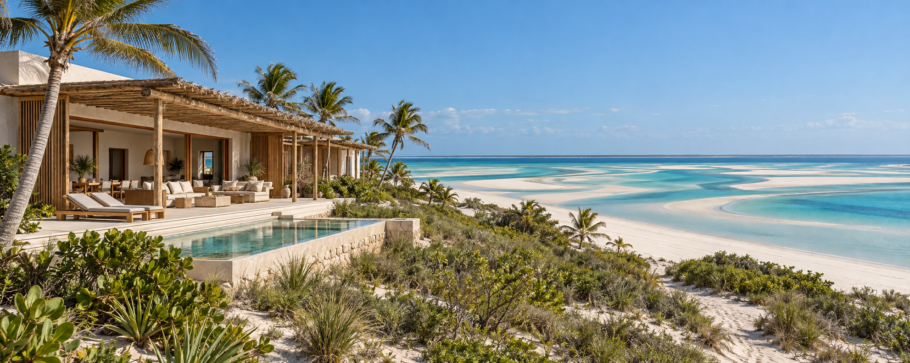

Lugares extraordinários.
Uma forma natural de viver.
Construção, renovação e interiores. Do primeiro conceito à entrega totalmente mobilada, acompanhamos a sua visão em cada decisão.

Arquitectura que pertence.
O privilégio de pertencer.
Um novo olhar sobre o luxo.
Da costa do Índico às montanhas do interior, criamos espaços que celebram Moçambique. Villas, resorts, lodges e guest houses onde o design moderno encontra a identidade da paisagem. Construímos de raiz e renovamos propriedades com o mesmo cuidado, do conceito aos interiores.
Acreditamos que o bom design valoriza cada espaço e cada investimento. Luz natural, materiais pensados e planeamento inteligente tornam a beleza funcional.
CONHEÇA A NOSSA FILOSOFIA ↗A sua visão. As nossas possibilidades.
Conceitos ilustrativos inspirados nas paisagens de Moçambique. As imagens geradas não representam locais exactos nem obras realizadas.
Menos impacto.
Mais significado.
A natureza orienta o desenho
Privilegiamos a vegetação existente, a ventilação natural e a sombra desde o primeiro esboço.
Inteligência em cada investimento
Plantas eficientes, escolhas criteriosas de materiais e planeamento por fases para equilibrar ambição e custo.
Modernismo com identidade local
Linhas puras e materiais com textura, atentos ao saber local, ao clima e à forma de viver em Moçambique.
Da primeira ideia.
Ao último detalhe.
Não tem de tomar cada decisão sozinho. Estamos consigo durante todo o processo, ajudando a comparar soluções, compreender as escolhas e tirar o melhor partido do espaço e do investimento.
Construção de raiz ou renovação completa: arquitectura, acabamentos, iluminação, mobiliário e decoração encontram uma visão coerente. Uma propriedade totalmente mobilada, com uma identidade que só você tem.
VAMOS DAR FORMA À SUA PROPRIEDADE ↗Um caminho claro. Em cada etapa.
A sua visão primeiro
Ouvimos o que deseja, estudamos o terreno ou imóvel e definimos consigo prioridades, necessidades e investimento.
Uma identidade só sua
Exploramos conceitos e ajudamos a escolher as soluções de espaço, materiais e conforto que melhor respondem à sua visão.
Acompanhamento contínuo
Na construção ou renovação, mantemos o diálogo consigo para orientar decisões e dar continuidade ao conceito.
Pronto para viver
Acabamentos, iluminação, mobiliário e decoração completam uma propriedade única, totalmente mobilada.
Um lugar extraordinário
começa com uma conversa.
Um terreno junto ao mar? Um refúgio na montanha? Conte-nos o que imagina para o seu espaço em Moçambique.